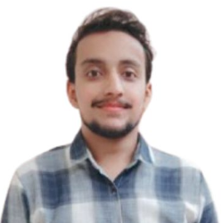

HRV capture app
A Wear OS app that records a five-minute heartbeat-interval test and computes RMSSD, SDNN and LF/HF with an FFT pipeline.

I build AI systems that listen to the body. My research connects smartwatch heart signals with locally hosted language models, so an assistant can notice when you are stressed and respond the way you need.
I am a Global Korea Scholarship (GKS) scholar and a master's student in Artificial Intelligence at Kunsan National University in Gunsan, South Korea, in the Department of Electronic and Information Engineering. Before research, I worked as a MERN stack web developer and as an IT trainer in Pakistan, teaching web development to students.
That background shapes how I work: I care about the person on the other side of the screen. My interests sit where machine learning meets human-computer interaction, especially wearable sensing, physiological signals such as heart rate variability, and adaptive LLM assistants.
I have studied Korean and hold TOPIK Level 3 (한국어능력시험 3급).
Introduces PulseMind, a system in which a Galaxy Watch derives heart-rate-variability features, classifies the wearer's autonomic state, and passes that state to a locally hosted LLM. When the wearer is stressed, the assistant changes how it answers.
Ongoing extension: two people, two watches, one assistant that shares the load.
A Wear OS app that records a five-minute heartbeat-interval test and computes RMSSD, SDNN and LF/HF with an FFT pipeline.
Monte Carlo simulation of a 1-D random walk confirming variance grows linearly with steps (measured slope 0.997).
Presented a deep reinforcement learning (DDPG) approach to microgrid energy management on the IEEE 33-bus system.
Fully funded by the Global Korea Scholarship (GKS). Department of Electronic and Information Engineering. Research on wearable sensing and stress-adaptive LLM interaction.
Coursework in artificial intelligence, databases, web development, human-computer interaction and software engineering.
Taught web development and MS Office. Designed hands-on web development modules that raised student engagement by 60%.
Built and delivered MERN stack web applications with clean, documented code and responsive front ends.
Built full-stack apps with CRUD, REST APIs and JWT authentication: an e-commerce clone with a Redux cart, a to-do app with login, and a Netflix-style browser.